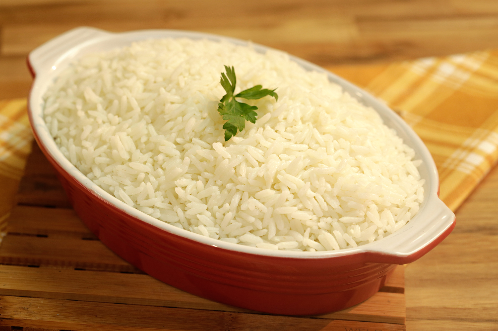

Arroz Soltinho

Ingredientes
1 colher de (sopa) de óleo
1 xícara (chá) de arroz
2 xícaras (chá) de água
Meia cebola picada
1 colher de (chá) de sal
Modo de Preparo
No fogão de sua preferencia ligue a chama do mesmo.
Em uma panela, aqueça 1 colher (sopa) de óleo de cozinha e refogue meia cebola picada ou os temperos de sua preferência.
Adicione 1 xícara (chá) de Arroz e refogue por alguns minutos.
Coloque no fogão um canecão com 2 xícaras de água para aquecer.
Acrescente 2 xícaras (chá) de água quente e 1 colher (chá) de sal.
Tampe parcialmente a panela e cozinhe em fogo médio por 10 a 15 minutos ou até o líquido secar e os grãos ficarem cozidos.
Desligue o fogo, tampe a panela e reserve por 5 minutos. Sirva em seguida.
Rende: 4 porções